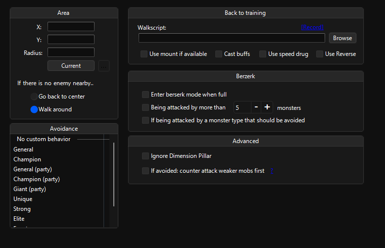

Training
{kind=link}
Area
Lets you select a training area and characters’ behavior.
[!TIP] Select
Go back to centeron your buffers for them to not wander around.
[!WARNING] It’s recommended that you specify an area that isn’t on a trade route or isn’t a populated area. Bot will try to target NPC thieves and possibly trade pets which will stutter the bot or bot might PK people randomly.
might be fixed?
Avoidance
Lets you avoid & prefer certain type of mobs and choose which mob to use berserk to.
Back to training
Lets you determine which script to use to the training area and the behavior while executing that script.
[RECORD] button opens the
Script Recorder
tool and starts the recording
[!TIP] If you’re searching for the auto-usage of speed drugs, marking
Use speed drugwill do it.
[!IMPORTANT]
Use Reversewill use the last death point.
[!WARNING]
Cast buffswill useBuffing skillsonTraining.
Berserk
Lets you determine when to use berserk.
Advanced
Contains an option to ignore dimension pillars and attacking weaker mobs when there is an avoided mob type.